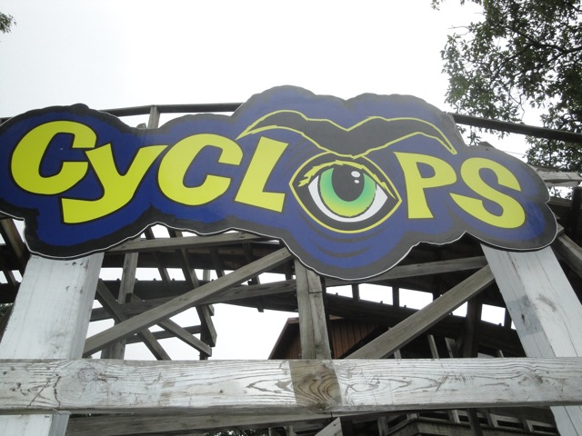

| |
Cyclops Review

We're here at Mount Olympus. Today's ride we'll be reviewing is Cyclops. This is a very interesting roller coaster. Much like Jackrabbit @ Kennywood, most of the ride is fairly forgotten by most enthusiasts except for one moment of really powerful ejector air that everyone loves. We get in, pull down the buzz bars and buckle the seatbelts (I love the restraints this ride has), and we're off. We roll out of the station and around a quick turn before climbing up the lifthill. While climbing up the lifthill, we just stare at Zeus right above us, as it towers over us. While some may wish that they were on Zeus since its bigger, but luckily, we're not. We're on Cyclops, which is MUCH MUCH better than Zeus. However, we then head down the first drop, which not only gains its speed fairly quickly, but theres actually some airtime in the backseat. But don't get too excited yet. Just wait till the end of the ride. We then rise up a small bunny hop, getting some more mild floater air, but we might as well be getting positve Gs here. It really doesn't matter compared to whats coming up. We rise up, get a little more airtime before getting some laterals. Yeah. This is really turning out to be a fun ride. We then rise up and get some more laterals before dipping down. If it wasn't for its insane repuation, this could fool you into thinking it was a fun, bouncy, harmless wooden coaster. We rise up, go through a turn, and rise up a small bump. At this point, we see it. We know its coming. We go through some straight track. Drumroll please. For here it comes. Its coming. Its coming. Its...OH SH*T!!!!!!!!!!! Those reports of the ejector air ARE NOT exxagerated. It is truely insane. You are yanked up out of your seat really hard before being slam dunked down to the ground. Its one of the few moments on any roller coaster where I grabbed onto the lap bar out of pure instinct. Its so insane that we don't know that we're now flying with our speed as we just rip through the turn before we rise up another hill. Theres another pop here, but after what we went through, why should we even give a single f*ck. You then go through a big swooping turn, giving us some nice laterals until we make it back into the final brake run. Damn. That ride was awesome. The moment of ejector air on the final drop is one of the most powerful moments of airtime on any coaster in the world, and I actually think the rest of the ride is pretty damn fun as well. I know I shouldn't care, but it is. I enjoy the mild pops and the bouncy nature it is, almost as if its taunting us before the big moment comes. Really, the only flaw with this ride is that its located at Mt. Olympus. Definetly give it a spin if you're here. Its the best coaster in the park with one of the most powerful moments of any coaster.
8/10
Location: Mt. Olympus
Opened: 1995
Built by: Custom Coasters
Last Ridden: August 14, 2010
Cyclops Photos

|